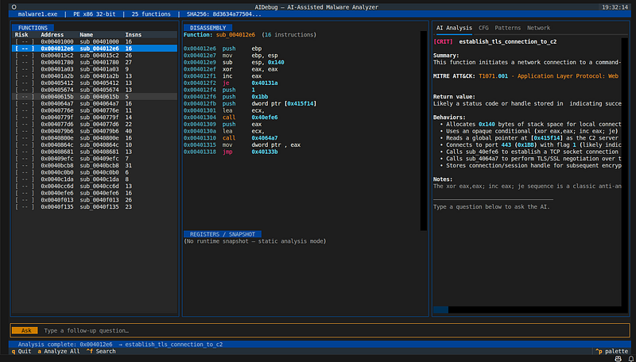
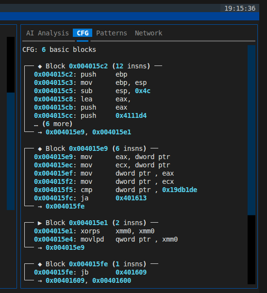
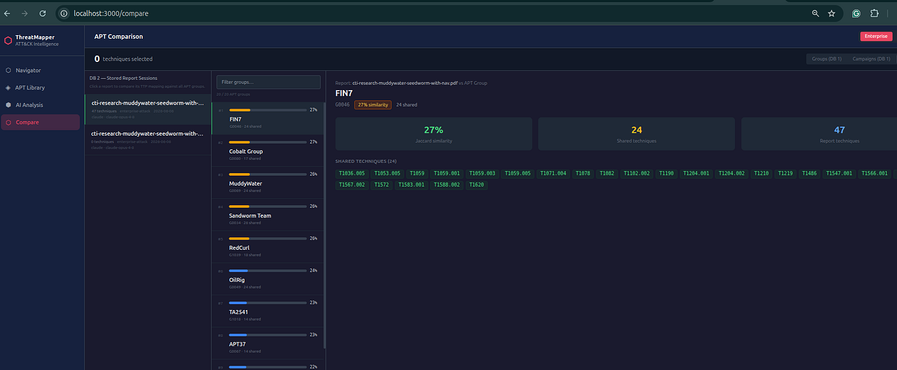
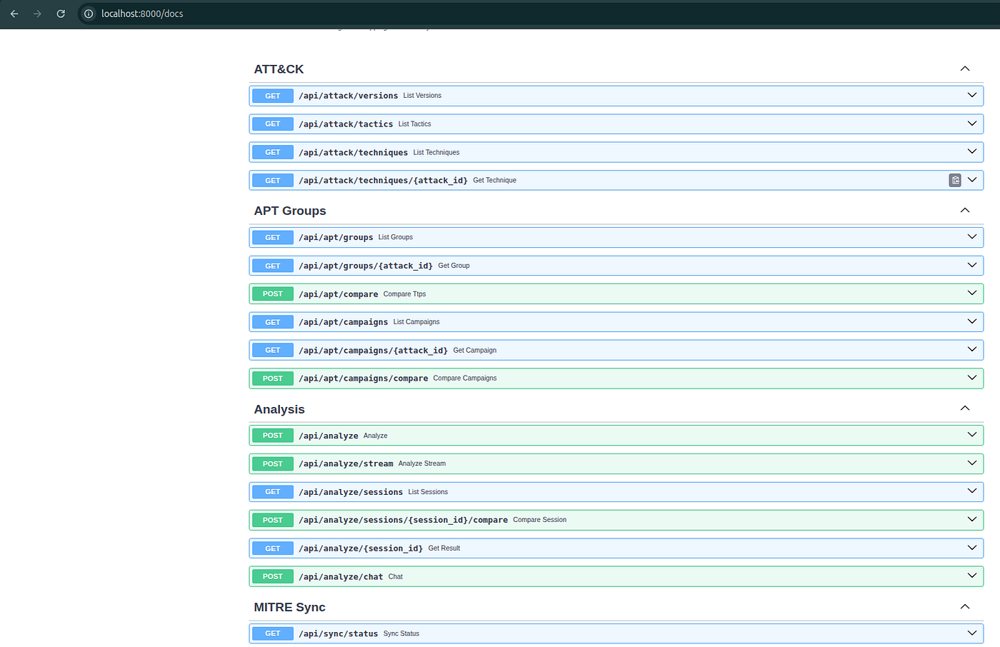

A milestone for a tool I built: on October 7, 2026, REMnux maintainer Lenny Zeltser merged AIDebug's installation state into the malware-analysis toolkit. The integration shipped in an official REMnux provisioning release, and the official documentation credits Andrey Pautov and 1200km.com.
From a personal reverse-engineering project to accepted upstream integration. Below is the evidence behind that milestone, alongside other accepted contributions, published releases, and clearly dated repository signals.
The October 28 audit reconfirmed nine merged external GitHub PRs and four open submissions; it found no additional merged PRs. These records prove upstream acceptance only. They do not establish production deployment, active users, operational effectiveness, or endorsement. Publication rules are defined in the adoption-evidence model.
Accepted upstream · released integration · official documentation
AIDebug is part of REMnux provisioning
Lenny Zeltser merged AIDebug's installation state into REMnux on 2026-10-07. The integration shipped in the official salt-states release v2026.41.4, published October 7, 2026. This is an accepted and released integration, not a pending submission.
REMnux's upstream documentation lists AIDebug under Use Artificial Intelligence and Statically Analyze Code / General, crediting Andrey Pautov and 1200km.com.
The released state installs 1200km-aidebug[ai] through pip and enables upgrades; it is not pinned to the original proposal's 3.0.0 version. The official documentation explains --offline and warns that configured remote AI services receive sample data.
Boundary: accepted upstream integration and documented authorship; no certification, security-audit, VM-image, runtime-testing, adoption-count, or feature-wide endorsement claim.
The upstream maintainers merged a resource-list contribution for ThreatMapper (the historical project name) and the CTI Analyst Field Manual. This records accepted curation, not an independent technical audit.
Boundary: curation evidence; not evidence of production SOC deployment.
Contribution audit 2026-10-28 · other observations dated separately
9Accepted external contributions
Merged into public third-party repositories. Closed-unmerged and open submissions are excluded.
4Open upstream submissions
4 open external GitHub PRs verified on October 28, 2026. The separately dated GitLab inventory below is historical.
281Local archived articles
Retained site-fact count verified October 6, 2026: local article archive pages plus 87 permitted TrainSec mirrors. Not a count of current Medium publications or solely my own articles.
v3.0.0AIDebug release
GitHub release, PyPI package, wheel/sdist artifacts, CI, tests, Kali request text, and docs.
v8.1.2AdversaryGraph published release
Published October 20, 2026. Retained v7.0.0 documentation and historical screenshots remain tied to their original source; they are not relabelled as v8.1.2 evidence.
154GitHub stars
Point-in-time sum across 80 public repositories checked 2026-10-30: 43 source repositories and 37 forked repositories, with 40 repository forks and 48 combined stars for AIDebug plus AdversaryGraph. Stars are interest signals, not users.
44GitHub followers
Public GitHub follower count checked 2026-10-30; followers are not active users.
3,178Clone events — last 14 completed UTC days
Fresh authenticated GitHub traffic for 2026-10-16–2026-10-29, checked 2026-10-30. Sum across 43 current public source repositories (42 with clone events). Current-day and older partial boundary data are excluded. Clone events are not users.
94AIDebug clone events — same window
AIDebug-specific GitHub clone events for 2026-10-16–2026-10-29. These are clone operations, not package downloads, distinct users, or proof of REMnux usage. Recorded API observations.
Retained observations for 2026-06-13–2026-10-29: the historical 28,076 through 2026-10-03 plus newly observed dates, counted once. Dates without complete retained coverage: 2026-10-04, 2026-10-05, 2026-10-06. Those dates are unknown, not zero; partial API boundary records are excluded. Repository coverage changes over time; this is not a complete lifetime total. The original baseline and historical days are preserved.
Repository & Review Signals
Dated review evidence / public repository counters
GitHub PR Review Signal
Accepted and pending upstream pull requests are tracked separately so open submissions are not presented as accepted validation.
Historical GitLab inventory from October 4, 2026; not revalidated in this review. Counts below are retained as historical records, not current status.
Open GitLab MRs0
Merged GitLab MRs0
Closed GitLab MRs1
Portfolio Repository Signal
Public repositories visible in the public GitHub inventory checked 2026-10-30. Source and forked repositories are counted separately; private repositories are excluded.
No non-author human comments or submitted reviews were found on the four open external PRs as checked October 28, 2026; bot reviews and author follow-ups are excluded. Labels or milestone changes can still indicate maintainer triage. None is a draft.
Clean / mergeable No technical blocker detected by GitHub.2
Unstable Usually branch protection, missing status context, or pending required checks.0
Behind Source branch needs sync with the target branch.0
Blocked Repository rules block merge until a required condition is satisfied.2
Unknown GitHub did not expose a stable mergeability result at snapshot time.0
OpenCTI #6819 is blocked; Sigma #6065 is blocked; HexStrike #187 and the LLM-security list #226 are clean. These are GitHub technical states, not acceptance decisions or a finding about the cause of review delay.
Top Starred Public Repositories
Highest-star public repositories visible under the GitHub account at snapshot time.
GitHub repository checks: 2026-10-30. Contribution audit: October 28, 2026. Watch subscribers use GitHub subscribers_count, not the watchers_count alias for stars. Issue counts exclude pull requests. GitLab values retain their explicitly labelled October 4 snapshot; clone history preserves the original baseline and explicitly records unrecovered dates. See the recorded metrics and aggregate clone history.
Approved Pull Requests
Approved external validation
Project / Contribution
Status
Upstream
Evidence
AIDebug / REMnux integration Official installation state and documentation crediting Andrey Pautov and 1200km.com.
4 open external GitHub submissions · checked 2026-10-28
OpenCTI Platform
Connector submission to the OpenCTI upstream platform adding Anthropic AI-powered enrichment to the connector ecosystem. Opened 2026-06-27. A Filigran maintainer labelled it community and requested an automated Copilot review; no human review comments yet. GitHub last-updated timestamp: 2026-10-05; technical merge state: blocked.
Sigma detection rule submission covering Deno child-process and non-mail IMAP activity. Opened 2026-06-14; triaged by the repository's automation as Review Needed; no human review yet. On October 28 the technical merge state is blocked. Last updated October 24, 2026; the PR carries the Author Input Required and Review Needed labels and has no milestone. Labels and technical merge state are not acceptance.
Vulnerable AI Lab submission to a public LLM-security resource list. Opened 2026-06-14; only an automated CodeRabbit summary so far, no maintainer response.
On 2026-08-05, 24 GitHub PRs and 1 GitLab MR with no maintainer comments or reviews were withdrawn and closed. REMnux PR #355 was merged on 2026-10-07 and is listed above as accepted. As of 2026-10-28 no non-author human comments or submitted reviews were found on the four remaining PRs; bot activity (CLA, CodeRabbit, Copilot, welcome workflows) and the author's own follow-ups are not counted as review. Open PRs are listed as submissions, not as acceptance. Items count as accepted here only after a recorded upstream merge.
Kali New Tool Requests
3 filed requests · current status not fully refreshed
The retained October 4, 2026 inventory records three requests filed June 14 as new/open. Rechecked October 28: available tracker snapshots remain historical; AuditAI could not be refreshed. Available official snapshots still show AIDebug and String Analyzer as new/open, but those snapshots are not live October 28 checks. Current kali-rolling inclusion was not independently verified. The official GitLab API confirms kali-meta #26 is closed; #24 and #25 could not be refreshed. The earlier inventory records these as wrong-venue requests. A historical “Kali 2026.2” milestone is not acceptance into Kali 2026.2. These are submissions, not claims of Kali packaging or adoption.
Tool Releases & Public Stats
GitHub / PyPI
These are self-published development and release records, not independent validation or endorsement. GitHub release and PyPI versions checked October 28, 2026.
AIDebug
Release v3.0.0PyPI 3.0.0Python15 stars2 forks
AI-assisted malware reverse-engineering debugger with ATT&CK mappings, YARA seed rules, IOC export, JSON output, TUI workflow, and analyst reports.
The attached v1.1.0 GitHub release files record 9 download events: 5 wheel downloads and 4 source-package downloads. This is a narrow, lifetime counter for those two assets, not total AIDebug downloads or installations.
REMnux provisioning installs the PyPI package through pip, so it does not need those GitHub release assets. The latest published AIDebug release is v3.0.0; the draft v3.1 release PR is not a published release.
Current AIDebug clone events are recorded above for a specific GitHub traffic window. No PyPI download count, active-user count, or REMnux usage total was available. The older aggregate-only portfolio history cannot be attributed to AIDebug.
Zero GitHub issues were found across open and closed states at this check. That is not evidence of zero users or zero bugs. Stars, forks, package downloads, clone events and feedback are separate signals; none alone establishes unique active users or production deployment.
Medium remains the public article source, while 1200km.com now provides internal navigation, Docusaurus pages, project pages, and ecosystem landing pages.
Historical product screenshots · not usage evidence

AIDebug: four-panel TUI for malware triage and reverse engineering workflow.

AIDebug: function/control-flow visualization evidence from the release screenshot set.

AdversaryGraph: self-hosted CTI workspace interface and analysis workflow evidence.

AdversaryGraph: report-to-ATT&CK mapping and analyst workflow screenshot.
Maintainer-Ready Project Summaries
Review positioning
AIDebug
Maintainer-ready because it has a tagged release, PyPI package, deterministic tests, GitHub Actions CI, release notes, screenshots, safety model, sample evidence, packaging metadata, and a clear non-exploit malware-analysis scope.
Malware analysisReverse engineeringATT&CKYARA
AdversaryGraph
Maintainer-ready because the v7.0.0 source release is merged and CI-validated with the reproducible readiness gate, rollback guidance, source-backed workflows, case studies, governed Threat Hunting, Query Library, Unified RAG/MCP, asset exposure assessment, and SOC access groups. Attack Simulation and SIEM validation were introduced in the historical v5.0.0 line and remain part of the current platform. The latest published stable GitHub release is v8.1.2. That release is separate from the retained v7.0.0 source documentation and historical screenshot evidence.
Maintainer-ready because the labs are framed as authorized, reproducible education and validation environments with clear deployment paths, screenshots, documentation, and CTI/detection context.
Vulnerable appsCloud labsMobile labsCyber range
CTI Field Manual / Detection Work
Maintainer-ready because the work is organized around evidence handling, ATT&CK mapping, detection handoff, reproducibility, Sigma/MISP-compatible contribution patterns, and analyst-facing documentation.